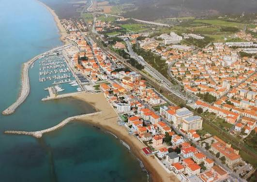

San Vincenzo
La Perla della Costa degli Etruschi, porta d'accesso all'Arcipelago Toscano.
Scopri il territorioMare, Natura e Isole all'orizzonte
Spiagge di sabbia dorata chilometriche, una pineta secolare che profuma di resina e salsedine, e un porto turistico da cui salpare verso l'Isola d'Elba e Capraia. San Vincenzo è la meta perfetta per chi cerca relax, natura selvaggia e il fascino indiscusso delle isole toscane.
